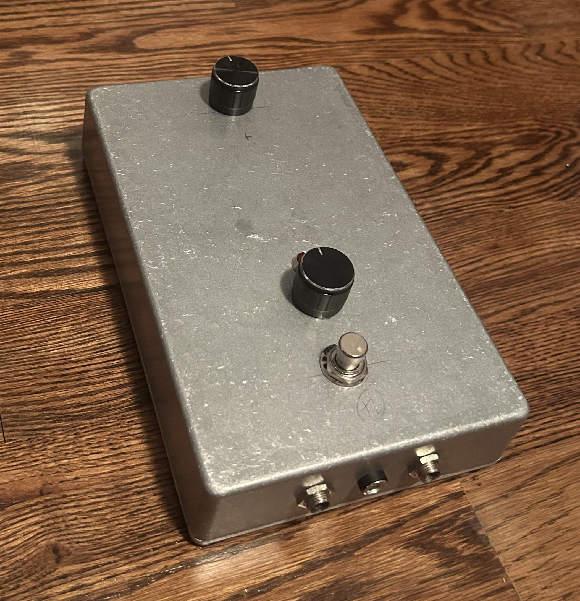
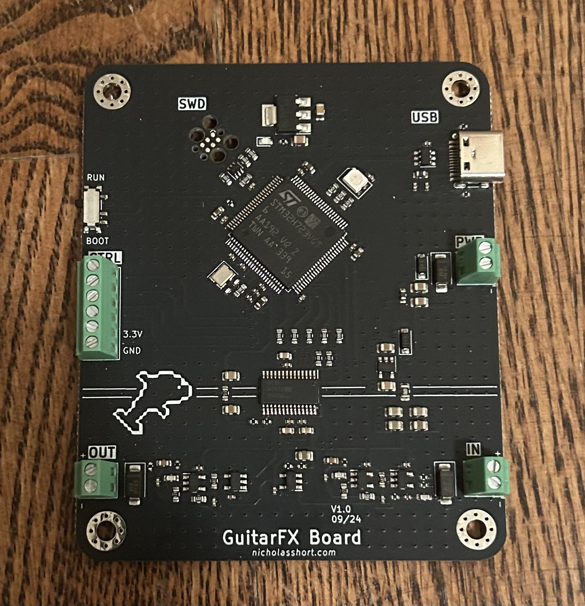

Digital Guitar Pedal
A custom digital audio effects pedal
Overview
A few years ago, I bought my first electric guitar. I was interested to learn a new skill, but also to learn something that could teach me more about audio electronics and digital audio processing. I created this pedal for exactly that reason. The internal PCB is built around an STM32H7 MCU and a PCM3060 audio codec, and includes analog frontend and analog output circuitry. The enclosure includes a 3PDT footswitch to enable/disable the pedal, as well as two potentiometers to adjust effect parameters.


Firmware
This pedal runs at a 48kHz sampling rate, and uses two 2KB byte ping-pong buffers for audio input and output that are handled via DMA. Each sample consists of 24bits in a 32bit frame. The PCM3060 only allows for stereo audio, so only 50% of each pingpong buffer contains audio information since this is a mono pedal. A 2KB byte "stereo" buffer consumed at 48kHz means that audio output latency is around 5ms, which isn't noticeable while playing.
DSP algorithms
Delay
- x[n]
- input signal
- y[n]
- output signal
- d[n]
- delay signal
- g
- comb filter feedback gain
- m
- dry/wet mix parameter
The delay algorithm I've implemented uses a very simple structure. It consists of a delay line and a dry/wet mixer, as described by the equations above. In software, the delay line consists of 24 thousand samples, meaning at 48kHz we can hear a maximum delay of up to 500ms.